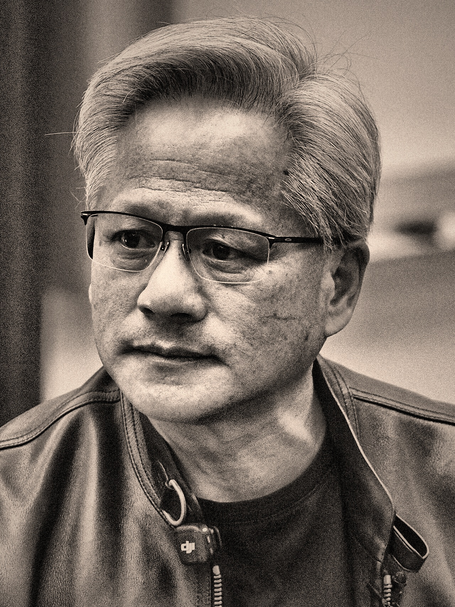
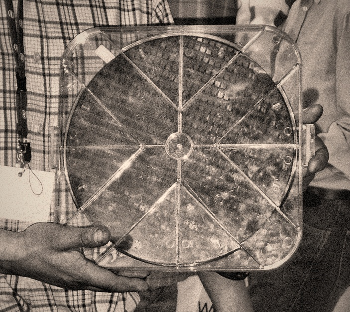
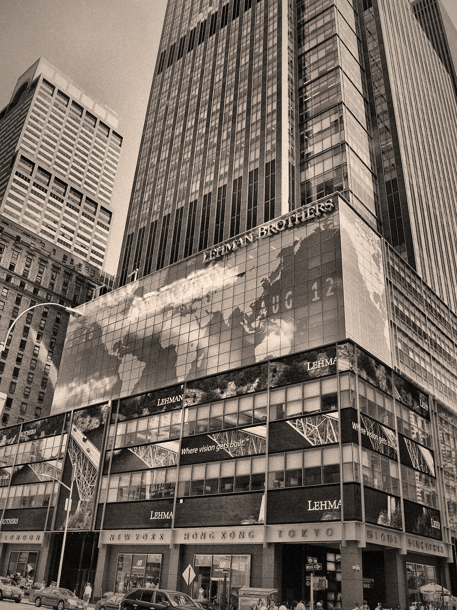
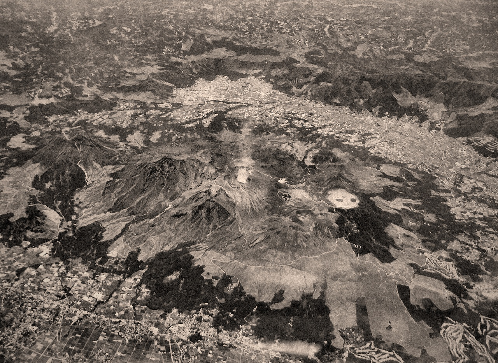
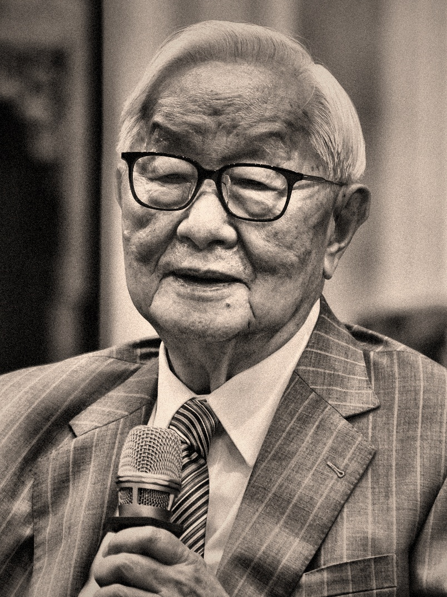

世界の海上貿易の要衝
世界最先端半導体の90%以上が集中する場所



単一の企業に世界全体のデジタル文明が依存しているという人類史上最大の地政学リスク。
代替不能な唯一無二の「チョークポイント（急所）」
代わりを作れる工場は地球上に存在しない。
世界最先端の需要を引き受ける余力はゼロ。

日本政府が1兆2000億円の異例補助金を投じ、半導体復権へ賭けた歴史的プロジェクト。

政財界のトップたちが93歳の老人に深々と頭を下げた瞬間。


しかしインテルら巨人たちは「技術が2〜3世代遅れた下請け町工場」と見なし、完全拒絶した。

BORN: 1931 · AGE AT TSMC FOUNDING: 55 YEARS OLD
MIT (MASSACHUSETTS INSTITUTE OF TECHNOLOGY)
Bachelor & Master of Science in Mechanical Engineering
STANFORD UNIVERSITY
Ph.D. in Electrical Engineering
TEXAS INSTRUMENTS (TI)
Group Vice President · Global Semiconductor Business (25 Years)
モリス・チャン（張忠謀）
55歳の元エリート // ハーバード・MIT・スタンフォードを経てTI上級副社長へ
TEXAS INSTRUMENTS CORP
EXECUTIVE BOARD // SUCCESSION REPORT
Morris Chang departs corporate America at age 54 with zero company ownership.
すべてを失った男：台湾からの緊急要請
54歳で権力闘争に敗れた男に、祖国・台湾政府から運命の一本の電話が入る
STAGE 1: CHIP DESIGN
独自の回路設計・アーキテクチャ開発
(Intel x86, Motorola 68000)
STAGE 2: MANUFACTURING (FAB)
自社の巨大工場でウェハー製造・量産
(Billion-Dollar Capital Expenditure)
当時の世界の絶対的常識
「設計も製造も自社で行う」垂直統合モデル（IDM）が支配していた時代
CHIP DESIGNERS (ファブレス)
工場を持たない設計専業スタートアップ。
数十億円〜数百億円の工場建設費をゼロにし、設計アイデアだけで起業可能に。
TSMC PURE-PLAY FOUNDRY
専業受託製造 (FOUNDRY) という新市場
すべての顧客の黒衣（裏方）に徹し、他社が設計した半導体の製造だけに全資源を集中する。
狂気のアイデア
「自社製品を作らない」専業受託製造（Pure-play Foundry）という革命
CUSTOMER TRUST (顧客の絶対的信頼)
TSMC CORE VALUE CLAUSE #01
自社ブランドを持たないからこそ、Apple、NVIDIA、AMDが互いに競合していても、全員が安心してTSMCに最先端チップの製造を託すことができる。
絶対原則：「顧客と絶対に競合しない」
自社製品を持たないからこそ、世界中の設計企業が最高機密を預けられる
倒産寸前
TSMC FINANCIAL LEDGER (1987–1988)
CASH RUNWAY // IMMINENT DEPLETION
稼働率ゼロ：倒産寸前の崖っぷち
実績ゼロの台湾企業に注文は来ず、工場は空っぽ。設立早々死の淵へ
1988年：Intelへの直談判
最後の望みを賭けた訪問
ARCHIVE FILE: TSMC-CASE-13 · CONFIDENTIAL
1988年：Intelへの直談判
最後の望みを賭けた訪問
突きつけられた現実
「200項目の致命的欠陥」という宣告
ARCHIVE FILE: TSMC-CASE-14 · CONFIDENTIAL
突きつけられた現実
「200項目の致命的欠陥」という宣告
24時間突貫修正
全エンジニア総動員によるIntel基準完全達成
ARCHIVE FILE: TSMC-CASE-15 · CONFIDENTIAL
24時間突貫修正
全エンジニア総動員によるIntel基準完全達成
Intel認証の獲得
世界最高峰の製造基準パス・世界への扉開く
ARCHIVE FILE: TSMC-CASE-16 · CONFIDENTIAL
Intel認証の獲得
世界最高峰の製造基準パス・世界への扉開く
出会い：ジェンスン・フアン
工場を持たない天才たち（NVIDIA）との絆
ARCHIVE FILE: TSMC-CASE-17 · CONFIDENTIAL
出会い：ジェンスン・フアン
工場を持たない天才たち（NVIDIA）との絆
不夜城の秘密：伝説の夜鷹部隊
昼夜を分かたぬ3交代・欧米の3倍速進化
ARCHIVE FILE: TSMC-CASE-18 · CONFIDENTIAL
不夜城の秘密：伝説の夜鷹部隊
昼夜を分かたぬ3交代・欧米の3倍速進化
欧米の3倍速で進化
24時間365日止まらぬ研究開発が生んだ圧倒的歩留まり
ARCHIVE FILE: TSMC-CASE-19 · CONFIDENTIAL
欧米の3倍速で進化
24時間365日止まらぬ研究開発が生んだ圧倒的歩留まり
2010年：Appleとの極秘会談
最大の敵・Samsung打倒へ向けた秘密同盟
ARCHIVE FILE: TSMC-CASE-20 · CONFIDENTIAL
2010年：Appleとの極秘会談
最大の敵・Samsung打倒へ向けた秘密同盟
Appleの苦悩：敵に心臓部を作らせている
Samsungとの特許泥沼戦争からTSMC独占への道
ARCHIVE FILE: TSMC-CASE-21 · CONFIDENTIAL
Appleの苦悩：敵に心臓部を作らせている
Samsungとの特許泥沼戦争からTSMC独占への道
世界最強同盟の誕生
iPhoneの全Aシリーズチップを100%独占受託
ARCHIVE FILE: TSMC-CASE-22 · CONFIDENTIAL
世界最強同盟の誕生
iPhoneの全Aシリーズチップを100%独占受託
2008年：世界金融危機
世界需要蒸発・半導体業界最大の暗黒期
ARCHIVE FILE: TSMC-CASE-23 · CONFIDENTIAL
2008年：世界金融危機
世界需要蒸発・半導体業界最大の暗黒期
77歳の復権：解雇撤回
「社員の信頼こそが全て」前CEO解任と改革
ARCHIVE FILE: TSMC-CASE-24 · CONFIDENTIAL
77歳の復権：解雇撤回
「社員の信頼こそが全て」前CEO解任と改革
狂気の大博打：設備投資を一気に1兆円へ
不況の底で踏み切った史上最大の先手必勝投資
ARCHIVE FILE: TSMC-CASE-25 · CONFIDENTIAL
狂気の大博打：設備投資を一気に1兆円へ
不況の底で踏み切った史上最大の先手必勝投資
ASML・EUV装置の独占
競合が追いつけない極端紫外線（EUV）領域へ
ARCHIVE FILE: TSMC-CASE-26 · CONFIDENTIAL
ASML・EUV装置の独占
競合が追いつけない極端紫外線（EUV）領域へ
圧倒的技術格差
Intel、Samsungの完全脱落と先端チップ90%独占
ARCHIVE FILE: TSMC-CASE-27 · CONFIDENTIAL
圧倒的技術格差
Intel、Samsungの完全脱落と先端チップ90%独占
なぜ熊本だったのか？
阿蘇の清らかな地下水と日本人の「職人魂」
ARCHIVE FILE: TSMC-CASE-28 · CONFIDENTIAL
なぜ熊本だったのか？
阿蘇の清らかな地下水と日本人の「職人魂」
日台半導体同盟の始動
失われた30年の奪還へ向けた歴史的メガファブ
ARCHIVE FILE: TSMC-CASE-29 · CONFIDENTIAL
日台半導体同盟の始動
失われた30年の奪還へ向けた歴史的メガファブ
「護国神山」
世界大戦を抑止するシリコンの盾
ARCHIVE FILE: TSMC-CASE-30 · CONFIDENTIAL
「護国神山」
世界大戦を抑止するシリコンの盾
創業者の誓い：ただ愚直に、顧客のために
37年の逆転劇：世界最強の半導体帝国
ARCHIVE FILE: TSMC-CASE-31 · CONFIDENTIAL
創業者の誓い：ただ愚直に、顧客のために
37年の逆転劇：世界最強の半導体帝国